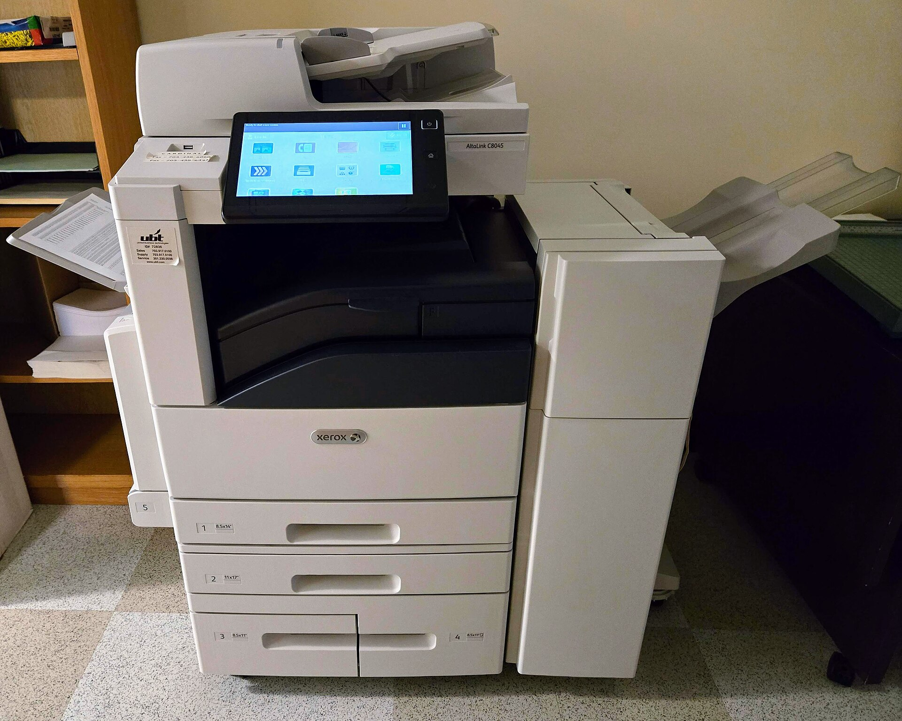
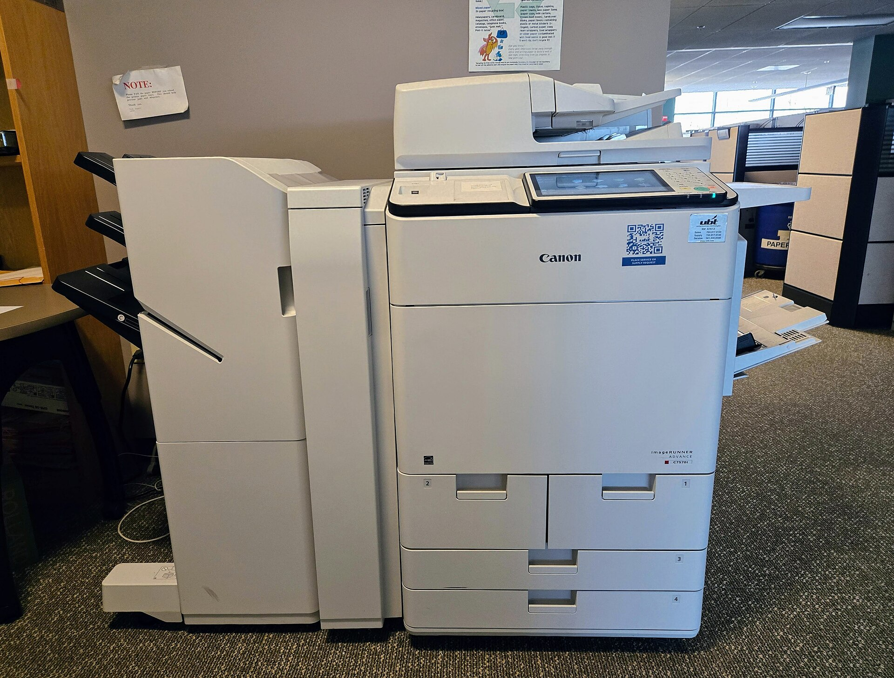

Họp doanh số trên màn hình dự báo
Thay file Excel tổng hợp. Đây là cam kết quyết định sale dùng hay quay lại Zalo và Excel.
Thiết kế theo hành trình của khách mua thiết bị văn phòng, từ lúc để lại thông tin đến lúc ký hợp đồng. Mỗi giai đoạn nói rõ khách làm gì, đang vướng ở đâu và hệ thống làm gì.
Bàn ghế, tủ hồ sơ, máy photocopy, máy in, máy chiếu. Deal từ vài chục triệu đến hơn một tỷ, nên mỗi lead bị bỏ sót là một khoản lớn.


Mọi lead từ ba nguồn đổ vào một dịch vụ lead duy nhất. Từ đó dữ liệu của hành trình được chia sang pipeline, hồ sơ khách, nhắc việc và báo cáo, nên mọi người nhìn cùng một con số.
Mỗi cột là một giai đoạn của hành trình. Kéo thẻ khách sang cột khác để chuyển giai đoạn, và xem dự báo bên dưới đổi theo. Số liệu là dữ liệu mẫu.
Mức dự báo = tổng (giá trị deal × xác suất của bước) trong kỳ. Thanh dài là % chỉ tiêu tháng của từng sale.
Bấm một nguồn để gửi lead thử và xem lead giao cho ai. Tua 15 phút để thấy cảnh báo trưởng nhóm. Chạy quét 8:00 để thấy deal nào bị nhắc.
Ba màn hình cấu hình chính, dựng lại theo cấu trúc Automation và SLA & Routing của Base, với dữ liệu mẫu của bài toán này.
Những gì sẽ được thiết lập trên hệ thống. Tất cả là đề xuất, chỉnh được ngay trong buổi khảo sát.
Trường bắt buộc khi nhập
| Quyền | Sale | Trưởng nhóm | Giám đốc |
|---|---|---|---|
| Xem, sửa deal của mình | |||
| Xem deal cả nhóm | |||
| Xem toàn bộ pipeline và dự báo | |||
| Duyệt bàn giao khi sale nghỉ | |||
| Đặt chỉ tiêu tháng |
Kết quả đến từ hai thay đổi thói quen: sale ghi mọi thứ vào CRM, lãnh đạo chỉ nhìn số trên CRM. Tình huống minh họa.
Lead ở Zalo, deal ở Excel riêng, ghi chú ở sổ tay.
Cuối tháng Excel của từng sale, cộng tay.
Nhóm 3 sale nhận và ghi lead vào CRM.
Trưởng nhóm xem cảnh báo, thôi hỏi miệng.
Cả 10 sale nhận lead theo lượt; lead cũ vào CRM.
Bỏ Excel cá nhân; số liệu ngày từ CRM.
Sale nghỉ: bàn giao một thao tác, người mới đọc lịch sử.
Không mất khách, không chờ sale cũ kể lại.
Cập nhật deal ngay sau mỗi cuộc gọi.
Họp doanh số hằng tuần trên màn hình dự báo.
Điểm bật: lãnh đạo ngừng nhận báo cáo Excel từ tuần 2 và chỉ họp trên màn hình dự báo. Khi cách báo cáo đổi, sale đổi thói quen ghi chép theo.
Thay file Excel tổng hợp. Đây là cam kết quyết định sale dùng hay quay lại Zalo và Excel.
Đề xuất 15 phút gọi lần đầu, hạn 2 đến 7 ngày cho từng bước. Giám đốc chốt cùng trưởng nhóm.
Thường là trưởng nhóm sale. Người này nhận cảnh báo lead chưa gọi và duyệt khi sale nghỉ.
Lãnh đạo công ty, giám đốc kinh doanh và trưởng nhóm sale
90 phút với giám đốc và trưởng nhóm sale. Chúng tôi mang bản nháp này đến và sửa ngay tại chỗ.
Hẹn buổi khảo sát